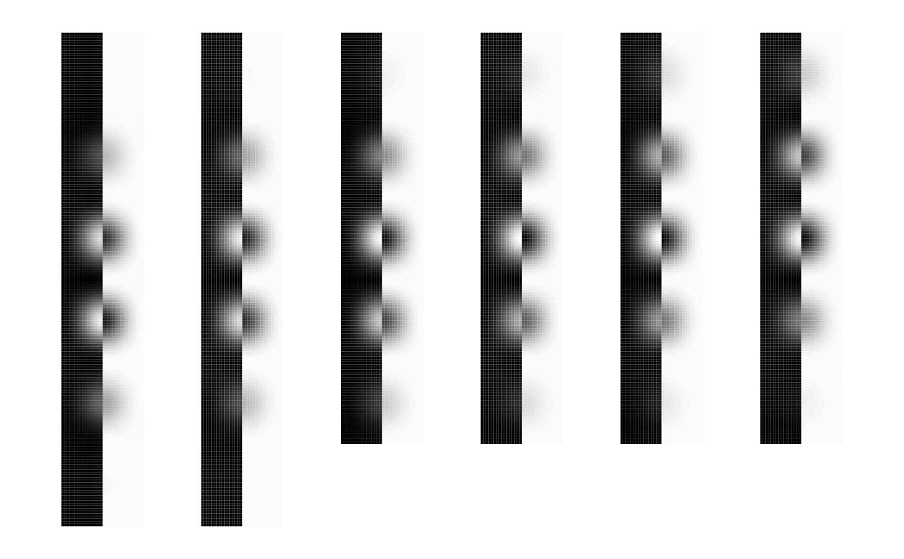
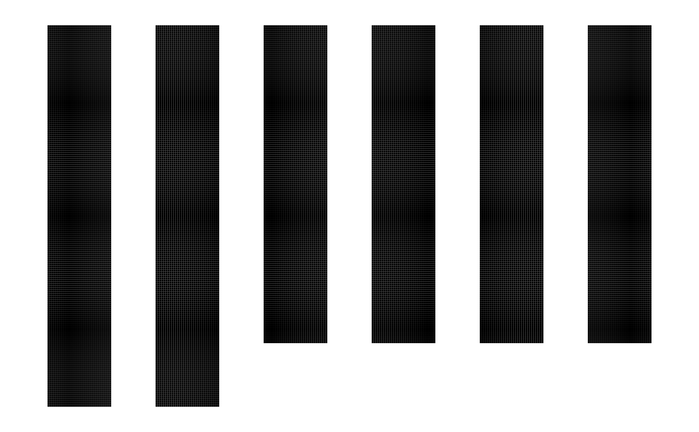

This function saves an Analyze-class object to a single binary file in Analyze format.
# S4 method for anlz
writeANALYZE(
aim,
filename,
gzipped = TRUE,
verbose = FALSE,
warn = -1,
compression = 9
)is an object of class anlz.
is the path and file name to save the Analyze file pair (.hdr,img) without the suffixes.
is a character string that enables exportation of compressed
(.gz) files (default = TRUE).
is a logical variable (default = FALSE) that allows
text-based feedback during execution of the function.
is a number to regulate the display of warnings (default = -1).
See options for more details.
The amount of compression to be applied when writing a
file when gzipped = TRUE
Nothing.
The writeANALYZE function utilizes the internal writeBin and
writeChar command to write information to a binary file.
Write ANALYZE volume to disk.
Analyze 7.5
http://eeg.sourceforge.net/ANALYZE75.pdf
norm <- dnorm(seq(-5, 5, length=32), sd=2)
norm <- (norm-min(norm)) / max(norm-min(norm))
img <- outer(outer(norm, norm), norm)
img <- round(255*img)
img[17:32,,] <- 255 - img[17:32,,]
img.anlz <- anlz(img) # create Analyze object
fname = file.path(tempdir(), "test-anlz-image-uint8")
writeANALYZE(img.anlz, fname, verbose=TRUE)
#> dims = 32 32 32
## These files should be viewable in, for example, FSLview
## Make sure you adjust the min/max values for proper visualization
data <- readANALYZE(fname, verbose=TRUE)
#> fname = /var/folders/1s/wrtqcpxn685_zk570bnx9_rr0000gr/T//RtmpG4GhYB/test-anlz-image-uint8
#> files = /var/folders/1s/wrtqcpxn685_zk570bnx9_rr0000gr/T//RtmpG4GhYB/test-anlz-image-uint8.{hdr.gz,img.gz}
#> hdr =
#> /var/folders/1s/wrtqcpxn685_zk570bnx9_rr0000gr/T//RtmpG4GhYB/test-anlz-image-uint8.hdr.gz
#> img =
#> /var/folders/1s/wrtqcpxn685_zk570bnx9_rr0000gr/T//RtmpG4GhYB/test-anlz-image-uint8.img.gz
image(img.anlz, oma=rep(2,4), bg="white")
image(data, oma=rep(2,4), bg="white")

abs.err <- abs(data - img.anlz)
image(as(abs.err, "anlz"), zlim=range(img.anlz), oma=rep(2,4), bg="white")

if (FALSE) {
## Loop through all possible data types
datatypes <- list(code=c(2, 4, 8, 16, 64),
name=c("uint8", "int16", "int32", "float", "double"))
equal <- vector("list")
for (i in 1:length(datatypes$code)) {
fname <- paste("test-anlz-image-", datatypes$name[i], sep="")
fname = file.path(tempdir(), fname)
rm(img.anlz)
img.anlz <- anlz(img, datatype=datatypes$code[i])
writeANALYZE(img.anlz, fname)
equal[[i]] <- all(readANALYZE(fname) == img)
}
names(equal) <- datatypes$name
unlist(equal)
}